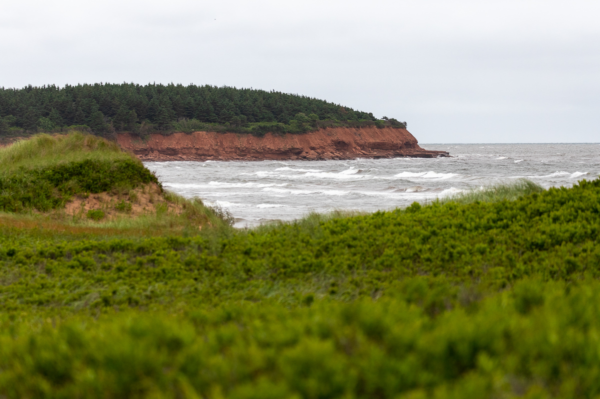
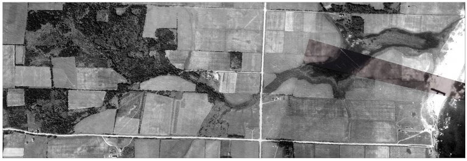
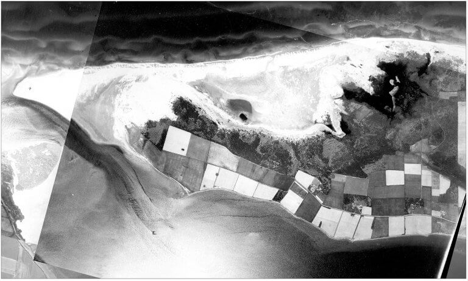
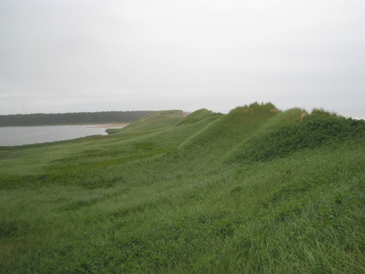
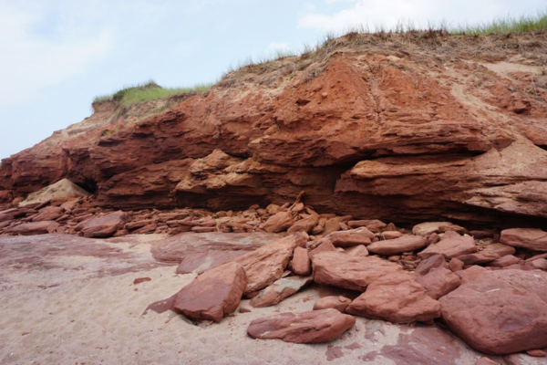
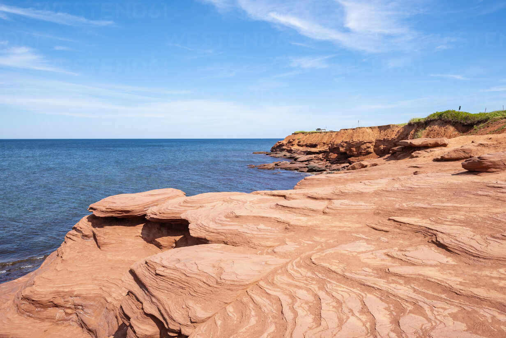

Prince Edward Island National Park was established in 1937 to protect a representative example of the Maritime Plain Natural Region. The park is just over 18 km² along a 40-km stretch of the north shore of P.E.I (2.7 square kilometres of area has been eroded from the park in the past 65 years). The predominant landscape features include an extensive system of beaches, barrier sand spits, and dune complexes, gently undulating forested till uplands, barachois ponds, and salt marshes. The national park also manages approximately 12 km² of federal crown lands adjacent to, some of which is still actively farmed by local farmers.
The early period of settlement had a dramatic impact on the island’s ecology. From the mid 1680s to the late 1800s, the original Acadian hardwood and mixed wood forests were harvested for home construction, ship-building, and for export. Throughout the 1800s and early 1900s, much of the land was cleared for agriculture, along with the construction of an elaborate network of rural roads. In the mid-1900s, land abandonment led to an increase in forest cover, from 30.9% in 1900 up to 48.6% in 1990, which was dominated by white spruce (Picea glauca) and some hardwoods that invaded former fields.
The 1896 Victorian mansion known as Dalvay-by-the Sea was constructed as a summer vacation home by a wealthy American industrialist, attracted to the island’s north shore beaches. The creation of Prince Edward Island National Park in 1937 significantly developed the island’s recreation and tourism industry. Visitors are drawn by the many fine white sand beaches and dunes, the rolling pastoral landscape, seaside villages, and the Green Gables House that memorializes the writing’s of P.E.I. author Lucy Maud Montgomery.
In 1998, Greenwich, a peninsula which separates St. Peters Bay from the Gulf of St. Lawrence, became part of Prince Edward Island National Park in an effort to protect and preserve the natural and cultural resources found in the area. The extensive and fragile coastal dune system, wetlands and various natural habitats are home to numerous rare plant species and for the endangered Piping Plover shorebird. Among the most spectacular natural characteristics protected at Greenwich are the large and mobile u-shaped dunes with associated dune tract ridges.
Land Use






Cavendish is a district still dedicated to farming in the first image, from 1935, but tourism had already gained a footing. JN McCoubrey runs a cottage business near the beach and Ernest and Myrtle Webb are giving tours of their home, “Green Gables,” because of its association with LM Montgomery’s book, Anne of Green Gables. No one imagines that within a year this land will become valued by Parks Canada and expropriated to become part of the new PEI National Park.
By 1958, the area has been transformed into the park’s showpiece; it is this new landscape, more so than the 1935 one, that will be preserved for future generations. The laneway to Green Gables, which had run straight from the road along the field division, now winds across a stream in more picturesque fashion. Yet there is also a modern bungalow court and cottage development, both configured in postwar suburban fashion. The golf course bears the underpaintings of farmers’ fields, duffers the most profitable of crops.
The subsequent photographs show changes more in degree than in kind. Development thrives, including the development of nature. The Gulf Shore Highway results in a more defined Lake of Shining Waters. Everywhere there is rampant tree growth— some planted, some naturally occurring—although stands continue to be sacrificed to the golf course’s needs. Nowhere is the park’s never-ending battle between preservation and use more evident than at Green Gables itself. Toward the end of the century, vegetation is planted to surround the house and the nearby stream is rescued from the golf course—and yet a greatly-extended parking lot is required to accommodate this greening. In pre-park Cavendish, farming negotiated a middle ground between nature and culture; as the park matures, nature and culture live more cheek by jowl.
Greenwich did not become part of PEI National Park until 1998. The 1935 image in some ways illustrates traditional PEI land use: small timber cuttings indicative of individual household use and a mosaic of small fields indicative of meticulous crop rotation. But a coastal narrative pervades. The 1958 photograph shows both an entire field swallowed up by dune encroachment and evidence, in two straight lines along the peninsula tip, of Department of Public Works infrastructure attempts to hold the sands in place.
The Greenwich dunes form a giant, U-shaped parabola that’s nearly one-kilometre (0.6-miles) wide and 20-metres (65-feet) tall. They’re renowned for the gegenwälle (counter ridges) that form inside the U as the dune migrates downwind.
Ecosystem
Marram grass helps create the gegenwälle. Seedlings become established between the base of the dune and the low-lying wet slack in front of it, where growing conditions are ideal. The grass holds the sand and creates the first ridge. As the dune moves downwind, another spot is created between its base and the slack. This stabilizes the sand, creating a new ridge. This process repeats, eventually creating the banded pattern of ridges known as gegenwälle. Rilla Marshall, the visitor services team lead at Greenwich, says P.E.I. (famously home to potatoes and other crops that love its rich, red soil) is the most developed landscape in Canada and the most densely populated province. It doesn’t have large areas of wilderness, making the national park all the more precious. Marram grass was once harvested by French settlers to feed their cattle. British farmers let their cattle graze on the dunes until the mid-1900s. In the 1950s, a large fence was erected here to slow moving sand, and while it may have worked it also altered the landscape.
Preservation
Marram grass grows extensive root systems in loose sand, making it an important component of a healthy dune ecosystem that supports endangered seabirds such as the piping plover. But it also provides a natural buffer against the wind and waves that carve away a little more of the island’s north shore every year — a natural process of erosion that climate change is accelerating.
“From a conservation perspective, sand dunes were always valuable habitats, but these places are increasingly critical in terms of how we can adapt to climate change,” says Dan Kraus, Weston Conservation Scientist with the Nature Conservancy of Canada (NCC), which organized the marram grass planting.
All of Canada’s coastal areas are threatened by climate change-related sea level rise, but perhaps none so drastically as Prince Edward Island, which is low, flat and composed of soft sandstone, making it particularly vulnerable to erosion. Researchers from the University of Prince Edward Island estimate that the ocean will encroach upon some 1,000 homes and buildings, 45 kilometres of road and five sewage treatment facilities within the next 90 years.
While healthy marram grass dunes won’t stop coastal erosion, they do provide a buffer against storm surges that can easily wipe out unprotected harbours and cause massive damage to property.
“Beaches are dynamic, volatile systems that are going to change no matter what,” explains Julie Vasseur, program director for the NCC in P.E.I. “But if you lose the grass and you lose the dunes, everything behind the beach is exposed to the weather conditions the dunes were helping to absorb.”
Adds Kraus, “We need to start thinking of these sensitive habitats as a kind of infrastructure.”
The public has an important role to play in protecting marram grass dunes, namely by staying out of them: in addition to planting new grass, the St. Peters Harbour volunteers also built a boardwalk so people can admire the dunes and access the beach without trampling the fragile plants.